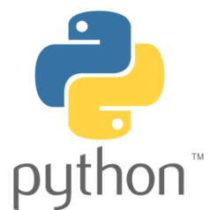

Python
 Python es uno de los lenguajes de programación más populares y utilizados en la actualidad. A diferencia de los lenguajes de programación visuales que usan bloques y gráficos, Python es un lenguaje textual, lo que significa que se programa escribiendo palabras y símbolos, como si estuvieras escribiendo en inglés pero con reglas especiales.
Originalmente, Python fue creado para desarrollar programas de escritorio, especialmente aquellos que necesitaban procesar y analizar grandes cantidades de datos. Por esta razón, se hizo muy conocido en áreas como la ciencia y la ingeniería, donde los investigadores lo usaban para realizar cálculos complejos y manejar información.
Gracias a su facilidad de uso y su potencia, Python ha evolucionado y ahora se utiliza en una gran variedad de aplicaciones. No solo sirve para programas científicos, sino que también puedes: crear sitios web y aplicaciones online, desarrollar videojuegos, controlar dispositivos electrónicos (como la placa Micro:bit) o trabajar con inteligencia artificial.
Entre las características de Python como lenguaje destacan que:
- Dispone de una sintaxis sencilla y expresiva.
- Se considera que es un lenguaje lento en comparación con otros a la hora de ejecutar los programas desarrollados en él.
- Existe una gran comunidad de personas que se lo usan y les dan soporte.
- Se encuentra en continuo desarrollo por lo que se corrigen errores y se va mejorando.
- El código se puede organizar en módulos que son agrupaciones de código que simplifican la lectura, la reutilización del código y el desarrollo de tareas complejas. Habitualmente están formados por funciones (conjunto de líneas de código que se agrupan y se les da un nombre con el fin de poder utilizarla en varias partes del programa).
- Es flexible y sencillo de usar gracias a los módulos desarrollados y compartidos por la comunidad.
- Es un lenguaje interpretado lo que significa que un software denominado intérprete convierte el código a lenguaje máquina línea línea y a medida que va que va ejecutando.
Python cuenta con un sitio web oficial en el que se puede encontrar información sobre el lenguaje documentación e incluso formas de ayudar a desarrollarlo y mejorarlo.